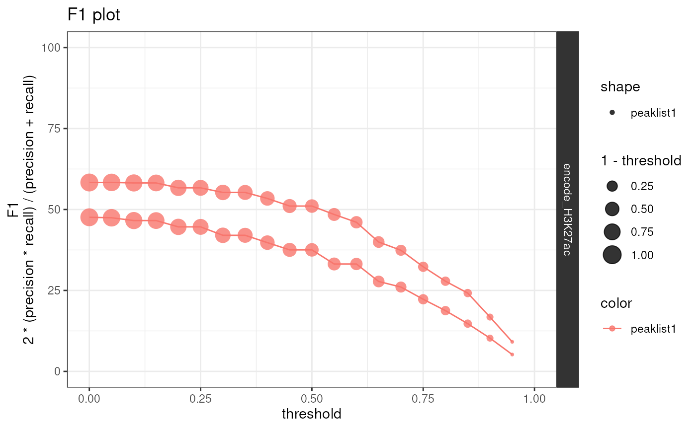

Plot precision-recall curves (and optionally F1 plots) by
iteratively testing for peak overlap across a series of
thresholds used to filter peakfiles.
Each GRanges
object in peakfiles will be used as the "query"
against each GRanges object in reference
as the subject.
Will automatically use any columns that are
specified with thresholding_cols and present within each
GRanges object
to create percentiles for thresholding.
NOTE : Assumes that all GRanges in
peakfiles and reference are already
aligned to the same genome build.
plot_precision_recall(
peakfiles,
reference,
thresholding_cols = c("total_signal", "qValue", "Peak Score"),
initial_threshold = 0,
n_threshold = 20,
max_threshold = 1,
workers = 1,
plot_f1 = TRUE,
subtitle = NULL,
color = "peaklist1",
shape = color,
facets = "peaklist2 ~ .",
interact = FALSE,
show_plot = TRUE,
save_path = tempfile(fileext = "precision_recall.csv")
)A list of peak files as GRanges object and/or as paths to
BED files. If paths are provided, EpiCompare imports the file as GRanges
object. EpiCompare also accepts a list containing a mix of GRanges objects
and paths.Files must be listed and named using list().
E.g. list("name1"=file1, "name2"=file2). If no names are specified,
default file names will be assigned.
A named list containing reference peak file(s) as GRanges
object. Please ensure that the reference file is listed and named
i.e. list("reference_name" = reference_peak). If more than one
reference is specified, individual reports for each reference will be
generated. However, please note that specifying more than one reference can
take awhile. If a reference is specified, it enables two analyses: (1) plot
showing statistical significance of overlapping/non-overlapping peaks; and
(2) ChromHMM of overlapping/non-overlapping peaks.
Depending on which columns are present, GRanges will be filtered at each threshold according to one or more of the following:
"total_signal" : Used by the peak calling software SEACR. NOTE: Another SEACR column (e.g. "max_signal") can be used together or instead of "total_signal".
"qValue"Used by the peak calling software MACS2/3. Should contain the negative log of the p-values after multiple testing correction.
"Peak Score" : Used by the peak calling software HOMER.
Numeric threshold that was provided to SEACR
(via the parameter --ctrl) when calling peaks without an IgG
control.
Number of thresholds to test.
Maximum threshold to test.
Number of cores to parallelise across (in applicable functions).
Generate a plot with the F1 score vs. threshold as well.
Plot subtitle.
Variable to color data points by.
Variable to set data point shapes by.
This argument is soft-deprecated, please use rows
and cols instead.
Default TRUE. By default, all heatmaps are interactive. If set FALSE, all heatmaps in the report will be static.
Show the plot.
File path to save precision-recall results to.
list with data and precision recall and F1 plots
data("CnR_H3K27ac")
data("CnT_H3K27ac")
data("encode_H3K27ac")
peakfiles <- list(CnR_H3K27ac=CnR_H3K27ac, CnT_H3K27ac=CnT_H3K27ac)
reference <- list("encode_H3K27ac" = encode_H3K27ac)
pr_out <- plot_precision_recall(peakfiles = peakfiles,
reference = reference)
#> Reformatting precision-recall data.
#> Saving precision-recall results ==> /tmp/Rtmpry6VLT/file206d7448c68aprecision_recall.csv
